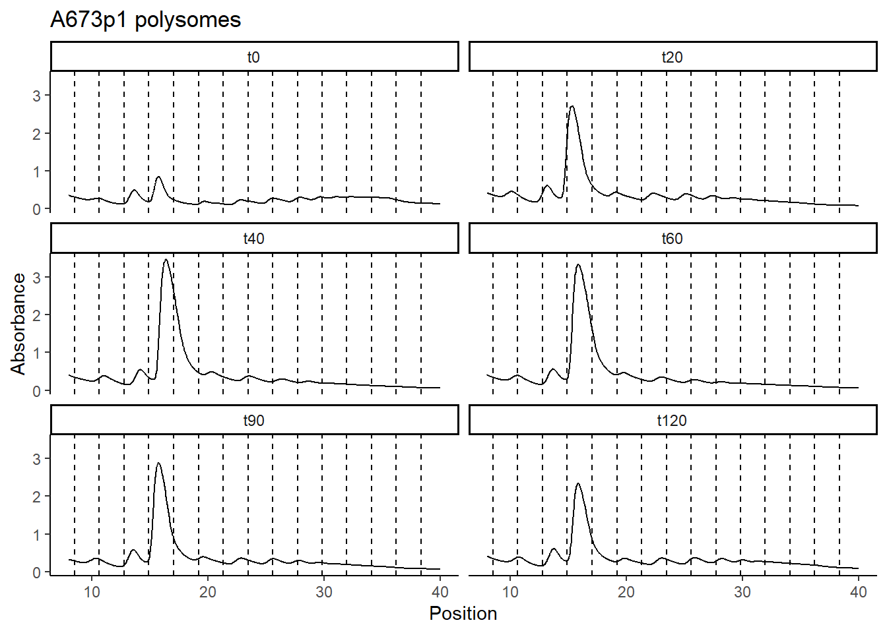
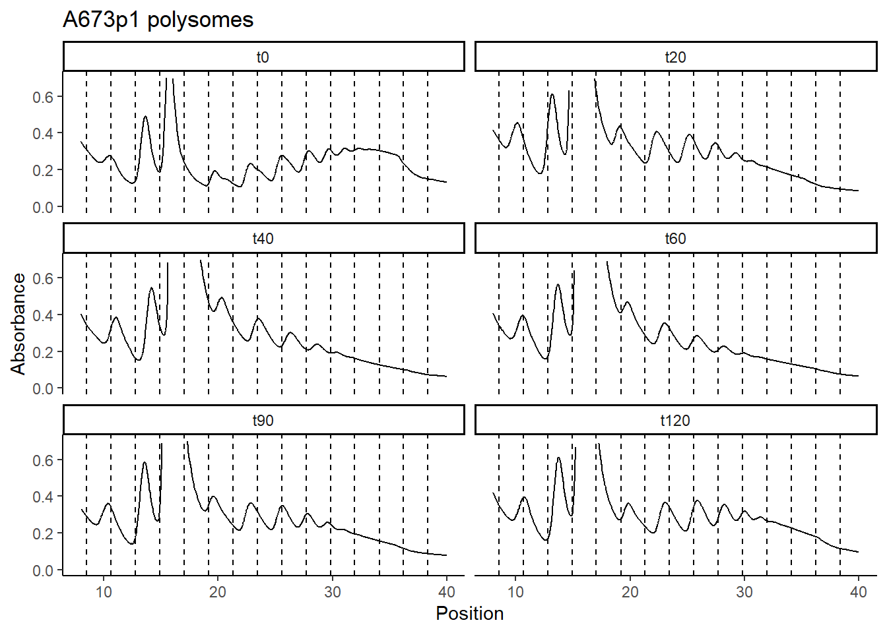

##########################################################################################
library('tidyverse')
library('RColorBrewer')Polysome curve plotting
Setting up the environment
These are packages you will need for this notebook. For exact versions used, please refer to the session info at the bottom of this notebook.
I want to set a base directory that we can use as a link to the directory where we will do most of the work. I use two directories here because the Workspace is what is pushed to GitHub and contains scripts and plot files, but the Repository is where more of the big data is stored that does not get pushed.
##########################################################################################
generalDatasets = 'C:/Users/chughes/Documents/bccrc/projectsRepository/generalDatasets'
baseWorkspace = 'C:/Users/chughes/Documents/bccrc/projectsWorkspace/sorensenLab/relatedToYbx1'
baseRepository = 'C:/Users/chughes/Documents/bccrc/projectsRepository/sorensenLab/relatedToYbx1'Data processing
Read in the polysome data, reshape it to a more usable format, and plot the curves.
##########################################################################################
##read in polysome data
timepoints = c('t0','t20','t40','t60','t90','t120')
polysomeData = tibble()
for (i in 1:length(timepoints)){
poly = read_csv(paste(baseRepository, '/polysomes20221116_a673p1Ybx1HibitArs100uM/polysomes20221116_a673p1Ybx1HibitArs100uM_', timepoints[i], '.csv', sep = ''),
show_col_types = FALSE, skip = 46, col_names = c('sample','source','position','absorbance','fractionNumber','fractionVolume')) %>%
dplyr::select(position:fractionNumber) %>%
dplyr::filter(position > 8 & position < 40) %>%
dplyr::mutate(dataset = timepoints[i])
#
polysomeData = rbind(polysomeData, poly)
}
##get the fraction ticks
poly = read_csv(paste(baseRepository, '/polysomes20221116_a673p1Ybx1HibitArs100uM/polysomes20221116_a673p1Ybx1HibitArs100uM_t0.csv', sep = ''),
show_col_types = FALSE, skip = 46, col_names = c('sample','source','position','absorbance','fractionNumber','fractionVolume')) %>%
dplyr::select(position:fractionNumber) %>%
dplyr::filter(position > 8 & position < 40) %>%
dplyr::mutate(fractionTicks = ifelse(is.na(fractionNumber), NA, position))
fractionTicks = poly$fractionTicks[!is.na(poly$fractionTicks)]
##make the plot for the 80S
polysomeData$dataset = factor(polysomeData$dataset, levels = c('t0','t20','t40','t60','t90','t120'))
ggplot(polysomeData, aes(position, absorbance)) +
geom_line() +
geom_vline(xintercept = fractionTicks, linetype = 'dashed') +
labs(x = 'Position', y = 'Absorbance', title = 'A673p1 polysomes') +
theme_classic() +
facet_wrap(~dataset, ncol = 2)
ggsave(paste(baseRepository, '/polysomes20221116_a673p1Ybx1HibitArs100uM/lineplot_allCurveFor80s.pdf', sep = ''),
height = 6, width = 4, useDingbats = FALSE)
##make the plot
polysomeData$dataset = factor(polysomeData$dataset, levels = c('t0','t20','t40','t60','t90','t120'))
ggplot(polysomeData, aes(position, absorbance)) +
geom_line() +
geom_vline(xintercept = fractionTicks, linetype = 'dashed') +
labs(x = 'Position', y = 'Absorbance', title = 'A673p1 polysomes') +
scale_y_continuous(limits = c(0,0.7)) +
theme_classic() +
facet_wrap(~dataset, ncol = 2)
ggsave(paste(baseRepository, '/polysomes20221116_a673p1Ybx1HibitArs100uM/lineplot_allCurveForPolysomes.pdf', sep = ''),
height = 6, width = 4, useDingbats = FALSE)